Efficient and Explainable
Neural Ranking
Jurek Leonhardt
PhD thesis defense, December 13th, 2023
L3S Research Center, Hannover, Germany
But what is ranking?
But what is ranking?

L3S Research Center
www.l3s.de
L3S Research Center: Home
L3S is a German research center internationally renowned for its work in the field of digital transformation and the development of AI methods.
Wikipedia
de.wikipedia.org › wiki › L3S
L3S
Das Forschungszentrum L3S ist eine im Jahr 2001 gegründete Forschungseinrichtung für Grundlagenforschung und anwendungsorientierte Forschung zu ...
de.linkedin.com › company
L3S Research Center
The L3S Research Center, founded in 2001, develops methods and technologies for digital transformation and researches the effects of digitalisation.
Ad-hoc retrieval
Given an input query $q$, return a list of $k$ documents $d_i$ from a corpus, ordered by their relevance with respect to $q$.
$d_1$
L3S Research Center
www.l3s.de
$d_2$
Wikipedia
de.wikipedia.org › wiki › L3S
$d_3$
de.linkedin.com › company
. . .
$d_k$
Ranking for the query "L3S Research Center".
Ranking is everywhere
Web Search
Ad-hoc retrieval (this thesis)
Personal assistants
Question answering
Online shopping,
video
streaming
Recommender systems
thus...
Ranking should be efficient
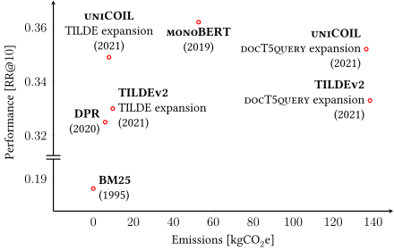
Data from: Scells, Zhuang, and Zuccon. “Reduce, Reuse, Recycle: Green Information Retrieval Research”. SIGIR 2022.
But state-of-the-art neural models (often) aren't.
Ranking should be explainable
Neural ranking in a nutshell:
(of course, the following is vastly simplified)
$ \underbrace{\phi(q, d)}_{\text{relevance}} = \operatorname{BERT} \underbrace{ (\texttt{[CLS]}\ q\ \texttt{[SEP]}\ d\ \texttt{[SEP]}) }_{\text{LLM inputs}} $
LLMs (i.e., Transformers or BERT) are complex and hard to interpret/explain.
What if the trained model is biased? Racist? Sexist?
Contributions

The big picture
- BoilerNet
(web content extraction)
Background
Sparse retrieval
Sparse retrieval (mostly) uses lexical matching for ad-hoc retrieval.

Sparse retrieval example.
Lexical matching is fast and efficient, explainable by design, limited to matching terms.
Semantic matching
Semantic matching employs representation learning in order to capture the semantics of queries and documents.
Cross-encoder
Dual-encoders
Neural semantic models are often computationally expensive and not explainable.
Retrieve-and-re-rank
Retrieve-and-re-rank is a telescoping setting that has two stages.
📚
Corpus
→
1
Lexical retrieval
→
📄📄📄📄📄
📄📄📄📄📄
📄📄📄📄📄
📄📄📄📄📄
Candidates
→
2
Semantic re-ranking
→
#1 D371 (0.95)
#2 D222 (0.85)
#3 D984 (0.71)
Final ranking
Dense retrieval
Dense retrieval uses semantic models directly for retrieval.
Documents and query are embedded in a common vector space using dual-encoder models.
Document representations are pre-computed during the indexing stage.
Retrieval is performed as an (approximate) nearest neighbor search operation.
The vector space is often $768$-dimensional.
Forward indexes
for efficient neural ranking
Jurek Leonhardt, Koustav Rudra, Megha Khosla, Abhijit Anand, and Avishek Anand
Efficient Neural Ranking Using Forward Indexes, WWW 2022
Jurek Leonhardt, Henrik Müller, Koustav Rudra, Megha Khosla, Abhijit Anand, and Avishek Anand
Efficient Neural Ranking Using Forward Indexes and Lightweight Encoders, TOIS (just accepted)
Fast-Forward indexes
Interpolating lexical retrieval and semantic re-ranking scores improves the performance:
$\phi (q, d) = \alpha \cdot \underbrace{\phi_S (q, d)}_{\text{retrieval}} + (1 - \alpha) \ \cdot$ $\underbrace{\phi_D(q, d)}_{\text{re-ranking}}$
Our approach: Efficient re-ranking with dual-encoders.
A Fast-Forward index is a look-up table for pre-computed document representations:
$\phi_D^{FF} (q, d)$ $= \zeta (q) \cdot \eta^{FF} (d)$
Fast-Forward indexes
The look-up operation is much more efficient than actual re-ranking:
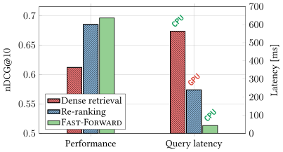
TCT-ColBERT on TREC-DL-Doc’19.
Coming up: Techniques to improve efficiency even further.
Sequential coalescing

Look-up operation in a coalesced index.
Long documents are often chunked into passages, so they have multiple representations.
Sequential coalescing merges similar representations of subsequent passages within a document.
Sequential coalescing
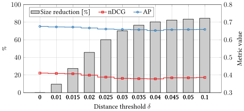
TCT-ColBERT on TREC-DL-Doc’19 with sequential coalescing.
Early stopping
Many tasks require only a small number of documents (e.g., the top-$10$).
Early stopping exploits correlations of retriever and re-ranker to limit the number of documents to be re-ranked.
ANCE on TREC-DL-Psg’19 with early stopping.
Efficient encoders
Queries and documents have different characteristics in terms of length and complexity.
The distribution of query and passage lengths in the MS MARCO corpus.
Intuition: Encoders should be adapted to these characteristics.
Efficient query encoders
Queries are short and concise; a simple model should be able to represent them.
Self-attention-based query encoder.
Hyperparameters:
- Number of layers $L$
- Number of attention heads $A$
- Representation size $H$
BERTbase: $L=12$, $A=12$, $H=768$. Can we go lower?
Efficient query encoders
Lightweight query encoders can achieve good performance, but it depends on the dataset:
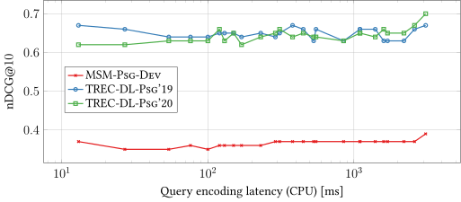Latency and ranking performance. Latency measured with batch size $256$.
Selective document encoders
Documents are often long; encoding (indexing) is expensive.
Complex encoders are required to capture the semantics of the documents.
Can we shorten documents instead?
[...]
This is a
web article
which is
unnecessarily long
and
contains
ads, repetitions, and, finally, some
useful content.
[...]
Example document.
Selective document encoders

Selective document encoder.
Selective document encoders dynamically shorten batches of input documents during inference.
Each document token is assigned a score, and the lowest scoring tokens are removed.
The degree to which documents are shortened is controlled by a hyperparameter $p \in [0,1]$.
Selective document encoders
Selective document encoders incur a small performance hit, but decrease the indexing latency notably:
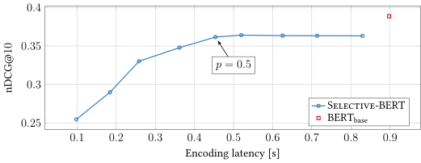Indexing latency and ranking performance on MSM-Psg-Dev. Latency measured with batch size $256$.
Summary
- We proposed Fast-Forward indexes for efficient and effective neural re-ranking without GPUs.
- We showed how efficiency can be improved using early stopping and sequential coalescing techniques.
- We introduced lightweight encoders for both queries and documents.
Sentence-level representations
for passage ranking
Jurek Leonhardt, Fabian Beringer, and Avishek Anand
Exploiting Sentence-Level Representations for Passage Ranking, LWDA 2021
Cross-attention re-rankers
LLM-based cross-attention ranker.
Cross-attention re-rankers (e.g., BERT) allow for query-document attention, which can be helpful for complex queries (e.g., question answering):
$\phi_{\operatorname{BERT}}(q, d) =$ $\operatorname{BERT}_\texttt{[CLS]}$ $(\texttt{[CLS]}\ q\ \texttt{[SEP]}\ d\ \texttt{[SEP]})$
Often times, only the $\texttt{[CLS]}$ output is used, and other outputs are discarded.
Can we utilize the contextualized sentence representations that BERT outputs?
Dynamic memory networks
Dynamic memory networks1 (DMNs) were proposed to enable cross-sentence reasoning for question answering.
DMNs operate on all query and document tokens:
$\phi_{\operatorname{DMN}}(q, d) = \operatorname{DMN}\left(q_1, \dots, q_{|q|}, d_1, \dots, d_{|d|}\right)$,
where $q_i$ and $d_i$ are word embeddings.
What if we used contextual BERT representations instead?
1Ankit Kumar et al. “Ask Me Anything: Dynamic Memory Networks for Natural Language Processing”. PMLR 2016.
BERT-DMN

BERT-DMN architechture.
BERT-DMNlite

BERT-DMNlite architechture.
Ranking performance
BERT-DMN shows improvements over BERT.
BERT-DMNlite performance is comparable to BERT.


Performance on passage ranking datasets.
Training efficiency
Training batches per second.
BERT-DMNlite reduces the number of trainable parameters roughly from 110M to 3M.
For each query-document pair, BERT outputs can be cached after the first epoch.
The effect of fine-tuning
The plot shows the average cosine similarity of BERT representations.
BERT-DMN shows much lower diffusion.
This suggests that fine-tuning vanilla BERT merely “aggregates” results.
The diffusion of information.
Summary
- We introduced BERT-DMN and BERT-DMNlite for re-ranking.
- BERT-DMN shows that sentence-level BERT representations hold useful information for ranking.
- BERT-DMNlite shows that fine-tuning BERT itself is not strictly necessary. This can improve training efficiency.
Extractive explanations
for interpretable text ranking
Jurek Leonhardt, Koustav Rudra, and Avishek Anand
Extractive Explanations for Interpretable Text Ranking, TOIS 2023
Extractive explanations
Example document for query: "how long to hold bow in yoga" 🤔
Why should we show the ranking model the whole document?
Select-and-Rank
Assumption: $k$ sentences of a document are enough to estimate its relevance w.r.t. a query.
The Select-and-Rank paradigm.
A document $d$ is split into sentences $s_i$.
The selector assigns a score to each sentence $s_i$ w.r.t. the query $q$.
The ranker sees only the $k$ highest scoring sentences.
Select-and-Rank
The Select-and-Rank paradigm.
The selector $\Psi$ computes a weight $w_i$ for each sentence:
$\left(w_1, \dots, w_{|d|} \right) = \Psi(q, d)$
End-to-end training: We draw a relaxed $k$-hot sample:1
$\left(\hat{w}_1, \dots, \hat{w}_{|d|} \right) = \operatorname{SubsetSample}(w, k, \tau)$
The query-document relevance is computed by the ranker $\Phi$ using the selected sentences $\hat{d}$:
$\phi(q, d) = \Phi \left(q, \hat{d} \right)$
Each token in $\hat{d}$ is multiplied by its corresponding $\hat{w_i}$ in order to preserve the gradients.
1Sang Michael Xie and Stefano Ermon. Reparameterizable Subset Sampling via Continuous Relaxations. IJCAI 2019.
BEIR benchmark
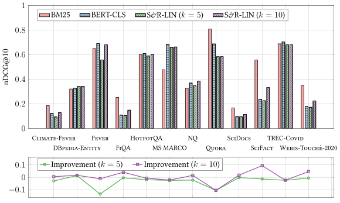
Results of Select-and-Rank models on the BEIR benchmark.
BEIR benchmark
There is a trade-off between the number of sentences $k$ and the effectiveness:
Performance on Fever.
Performance on HotpotQA.
Performance on SciFact.
Comprehensiveness
Comprehensiveness measures the quality of rationales:
How well does the ranking model perform using the document without the selected sentences?
Ranking performance on TREC-DL-Doc’19 using $k = 20$, where $N$ sentences are removed (leaving $k-N$ sentences).
Faithfulness
Faithfulness measures the degree to which the explanations represent the model's reasoning:
How well do the selected sentences represent the document they originate from?
We perform a user study to determine the utility of Select-and-Rank for humans.
The user study interface.
Faithfulness
240 query-document pairs from 30 queries judged by 80 users (4 judgments per instance).
Accuracy of relevance judgments.
Time taken to complete relevance judgments.
Summary
- We proposed Select-and-Rank, a ranking framework that is interpretable by design.
- We showed how Select-and-Rank can be used to explain the decisions for a large number of ranking tasks.
- We performed a user study to highlight the utility of our extractive explanations to humans.
Web content extraction
for corpus creation
Jurek Leonhardt, Avishek Anand, and Megha Khosla
Boilerplate Removal Using a Neural Sequence Labeling Model, WWW 2020
Boilerplate removal
https://en.wikipedia.org/wiki/The_Web_Conference
The Web Conference
The Web Conference (formerly known as International World Wide Web Conference, abbreviated as WWW) is a yearly international academic conference on the topic of the future direction of the World Wide Web. The first conference of many was held and organized by Robert Cailliau in 1994 at CERN in Geneva, Switzerland. The conference has been organized by the International World Wide Web Conference Committee (IW3C2), also founded by Robert Cailliau and colleague Joseph Hardin, every year since. The conference’s location rotates among North America, Europe, and Asia and its events usually span a period of five days. [...]
Boilerplate removal is the process of extracting content in plain text from a web page.
Example use cases:
- Reader view functions of web browsers.
- The creation of corpora from the web.
Locality of authoring
An example web page and its elements.
Task: Classify each leaf node in the HTML tree as content or not content.
Assumption: The position of a leaf node within the HTML tree is important for classification.
We therefore feed the sequence of leaf representations into the model and classify each element.
Page representation
A web page is represented as a sequence of its leaf nodes ($\texttt{\#text}$) in the HTML tree.

Example web page and its representations.
BoilerNet

The BoilerNet architecture.
The BoilerNet model consists of
- an embedding layer,
- a bidirectional LSTM, and
- a binary classification layer.
Results
On CleanEval, BoilerNet performs similarly to Web2Text, whose features were manually optimized for this dataset.
Performance on CleanEval.
On GoogleTrends-2017 (our dataset), BoilerNet outperforms competitors.

Performance on GoogleTrends-2017.
Summary
- We proposed BoilerNet, a neural boilerplate removal technique that does not require feature engineering.
- We created GoogleTrends-2017, a recent and diverse web content extraction dataset.
Conclusion
In this thesis, we focused on:
- Efficient neural ranking using Fast-Forward indexes.
- Efficient training for re-ranking using BERT-DMN.
- Explainable neural ranking using Select-and-Rank.
- Web content extraction using BoilerNet.
Future work and outlook
Recall the trade-off between efficiency, explainability, and effectiveness.
Can we achieve efficiency and explainability?
The end
Backup slides
Lexical matching
Lexical matching estimates the relevance of query-document pairs based on overlapping terms and their frequencies (tf).

Query: "What is the meaning of life?" 🤔
Hybrid retrieval
Hybrid retrieval uses a sparse retriever to retrieve $K^q_S$ and a dense retriever to retrieve $K^q_D$ for a query $q$.
The documents are ranked using a combination of the scores.
MaxP indexes
Long documents are often chunked into passages and scored using a $\max$ operation:
$\phi_D^{FF} (q, d) = \max_{p_i \in d} (\zeta (q) \cdot \eta^{FF} (p_i))$
Fast-Forward indexes: Motivation
Sparse retrieval is fast, but not competitive on its own.
Dense retrieval shows good nDCG, but recall suffers and it is slow.
Re-ranking using dense retrieval models works well.
Score interpolation further helps:
$\phi (q, d)$ $= \alpha$ $\phi_S (q, d)$ $+\ (1 - \alpha) $ $\phi_D(q, d)$
Results on TREC-DL-Doc’19.
Sequential coalescing
$p_0$
$p_1$
$\mathcal{A}$
$p_2$
$\mathcal{A}$
$\hat{p}_1$
$p_3$
$\hat{p}_2$
$p_4$
$\hat{p}_3$
$p_5$
$p_6$
$\mathcal{A}$
$\hat{p}_4$
All passage representations of a document in the embedding space.
def coalesce(P):
P_new = []
A = []
A_avg = None
first_iteration = True
for p in P:
if first_iteration:
first_iteration = False
elif distance(p, A_avg) >= delta:
P_new.append(A_avg)
A = []
A.append(p)
A_avg = np.mean(A, axis=0)
P_new.append(A_avg)
return P_new
Early stopping
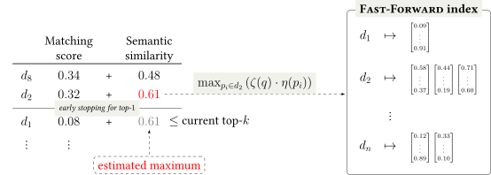
The early stopping approach illustrated.
Early stopping ($k=3$)
We set $\alpha = 0.5$:
$\phi (q, d) = 0.5 \cdot \phi_S (q, d) + 0.5 \cdot \phi_D (q, d)$
Stop the computation once the highest possible score $\phi_{\text{max}} (q, d)$ is too low to make a difference.
$\phi_D$ is not normalized. We approximate its maximum as the highest observed score:
$\phi_{\text{max}} (q, \text{D224}) = 0.5 \cdot 0.73 + 0.5 \cdot 0.67 = 0.70$
| $\phi_S$ | $\phi_D$ | $\phi$ ↓ | |
|---|---|---|---|
|
|
|
|
|
|
|
|
Ranked documents.
Early stopping ($k=3$)
We set $\alpha = 0.5$:
$\phi (q, d) = 0.5 \cdot \phi_S (q, d) + 0.5 \cdot \phi_D (q, d)$
Stop the computation once the highest possible score $\phi_{\text{max}} (q, d)$ is too low to make a difference.
$\phi_D$ is not normalized. We approximate its maximum as the highest observed score:
$\phi_{\text{max}} (q, \text{D224}) = 0.5\ \cdot$ $0.73$ $ +\ 0.5\ \cdot$ $0.67$ $ \gt $ $0.68$
| $\phi_S$ | $\phi_D$ | $\phi$ ↓ | |
|---|---|---|---|
|
|
|
|
|
|
|
|
Ranked documents.
Early stopping ($k=3$)
We set $\alpha = 0.5$:
$\phi (q, d) = 0.5 \cdot \phi_S (q, d) + 0.5 \cdot \phi_D (q, d)$
Stop the computation once the highest possible score $\phi_{\text{max}} (q, d)$ is too low to make a difference.
$\phi_D$ is not normalized. We approximate its maximum as the highest observed score:
$\phi_{\text{max}} (q, \text{D105}) = 0.5\ \cdot$ $0.49$ $ +\ 0.5\ \cdot$ $0.71$ $ \lt $ $0.72$
| $\phi_S$ | $\phi_D$ | $\phi$ ↓ | |
|---|---|---|---|
|
|
|
|
|
|
|
|
Ranked documents.
Fast-Forward results
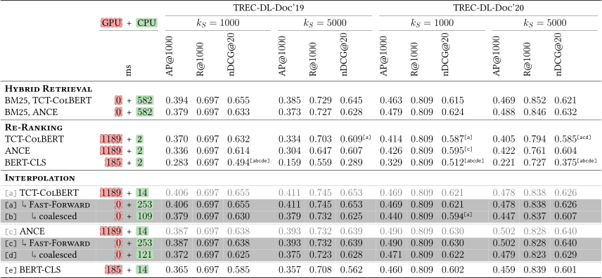
Document ranking results.
Fast-Forward results
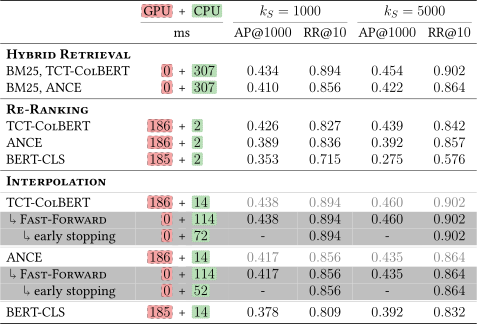
Results on TREC-DL-Psg’19.
Fast-Forward results
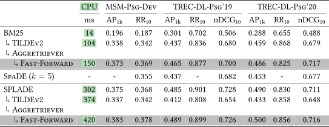
Passage ranking results at retrieval depth $k_S = 5000$.
Fast-Forward results: Query encoders
Query encoding latency in seconds.
nDCG@10 on MSM-Psg-Dev.
nDCG@10 on TREC-DL-Psg’19.
nDCG@10 on TREC-DL-Psg’20.
Selective document encoders
Selective document encoders incur a small performance hit, but decrease the indexing latency notably:
Encoding, batch size $256$.
MSM-Psg-Dev, $L=12$.
MSM-Psg-Dev, $L=0$.
Select-and-Rank results
Ranking performance with $k = 20$ selected sentences.
Select-and-Rank results
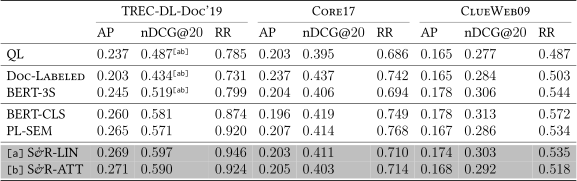
Ranking performance with $k = 20$ selected sentences.
Select-and-Rank examples
Example rankings from TREC-DL-Doc’19 with the most relevant selected sentences. Suffix (+/-) indicates the relevance.
Select-and-Rank examples
Example selections on Fever. Highlighted sentences contain the answer.
Select-and-Rank application
Unaltered relevant document
Relevant document with label leakage
Select-and-Rank application
Documents where the leakage sentence has been selected.
Distribution of the ranks of the leakage sentence.